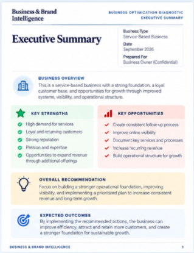

1
Executive Summary
Your high-level view of the business.
It includes:
- Your overall business situation.
- Important conclusions.
- Current strengths.
- Areas needing attention.
- Your diagnostic baseline.
- What improvement should look like over the next 90 days.
